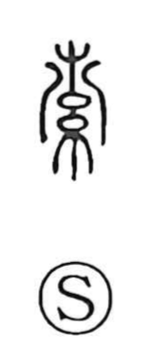

索

Uncategorized
Kun: nawa, motomeru | On: saku
rope ・ to twist rope ・ to search ・ to seek ・ to run out ・ empty
Explanation
This character began as a pictograph of rope being twisted: the strand is looped over a tree or post at the top, where the twisting starts and then continues in one long, continuous motion to form a cord. From this image it first meant “rope” and “to twist rope.” By analogy, the patient act of tracing something bit by bit, as one lays twist upon twist, gave rise to the senses “to search” and “to seek,” and from the depletion that follows such effort it further came to mean “to run out” and “empty.”